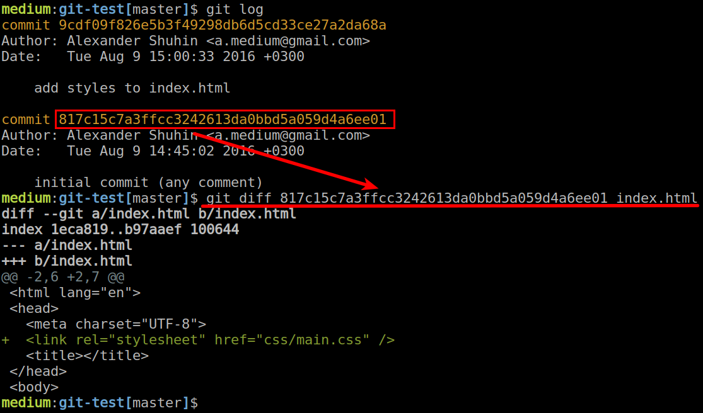
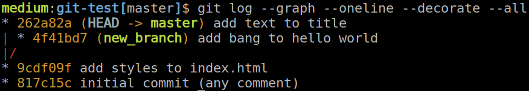
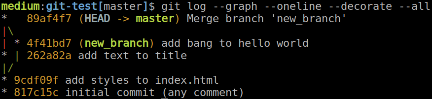
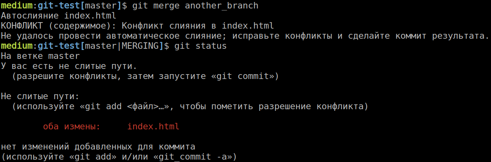
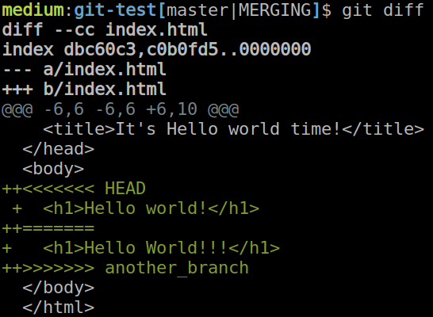

Александр Шухин
Email: a.medium@gmail.com
Telegram: @alex_medium
Github: alexshuhin
План лекции
Подготовим машинки к Git в консоле
Немного расскажу про Git
Разберем очень сложные для понимания моменты
Поиграемся в консольке все вместе
Выполним тестовое задание индивидуально
Установка git на macOS
Проверяем установлен ли Git
git --versionЕсли нет, то:
Открываем консоль iTerm
Устанавливаем Homebrew c помощью команды
/usr/bin/ruby -e "$(curl -fsSL https://raw.githubusercontent.com/Homebrew/install/master/install)"Устанавливаем Git
brew install gitУстановка git на Linux
Проверяем установлен ли Git
git --versionЕсли нет, то:
Открываем консоль gnome-terminal
Устанавливаем Git
apt-get install gitУстановка git на Windows
Заходим на https://git-scm.com/
Устанавливаем Git
Немного о консоле
Пути как в Windows, только вместо
Файловая система регистрозависимая -
Файлы/директории начинающиеся с точки, например
Что такое Система Контроля Версий?
Система управления версиями (Version Control System, VCS) — программное обеспечение для облегчения работы с изменяющейся информацией
Давайте представим
Вы - разработчик-одиночка
Несколько рабочих компьютеров, на которых приходится работать над одним проектом
Не нужно заботиться о резервном копировании проекта
Возможность заглянуть в историю изменений каждого файла
Экспериментировать, не боясь испортить работающий код
Следить за своим процессом разработки
Публикация кода на сервере
Вы - работаете в команде
Одновременная разработка одного проекта
Защита от вандализма, выявление виновных
Наслаждаться когда другие работают
Просмотр кода с коллегами
Интеграция с менеджером задач, такие как Jira, Youtrack, Trello и прочее
GIT
"the stupid content tracker" © man git
Немного истории

Linus Torvalds начал разработку Git в апреле 2005 года
16 июня 2015 года с помощью git был сделан релиз ядра Linux
25 декабря того же года увидела свет первая версия Git
Основные моменты Git
Git распределенная система контроля версий (DVCS)
Вам не обязательно иметь сервер для того чтобы обмениваться кодом
Вы можете работать локально со своей версией
Репозиторий
Это информация о всех изменениях в проекте с момента первого коммита
Явным признаком того что данная директория находится под контролем Git - папочка .git в корне проекта
Её можно удалить, Вы просто потеряете историю проекта
Коммит
Коммит - это фиксация изменений в истории проекта

Дерево коммитов
Коммиты выстраиваются в дерево таким образом, что у каждого коммита (кроме первого) есть родительский коммит (а то и несколько)
Наглядно это выглядит так

Связь между родительским и дочерним коммитами
<ul>
<li>Item 1</li>
<li>Item 2</li>
<li>Item 3</li>
</ul>
<ul>
<li>Item 1</li>
<li>Item 4</li>
<li>Item 3</li>
</ul>
diff --git a/test.html b/test.html
index 4e1e5e4..23cdccd 100644
--- a/test.html
+++ b/test.html
@@ -1,5 +1,5 @@
<li>Item 1</li>
- <li>Item 2</li>
+ <li>Item 4</li>
<li>Item 3</li>
Ветка
Альтернативная реальность вашего репозитория

Первоначальная настройка Git
> git config --global user.name "Василий Пупкин"
> git config --global user.email vasiliy.pupkin@gmail.com
Делаем репозиторий
> mkdir my_project
> cd my_project
> pwd
/path/to/my_project
Инициализируем репозиторий
> git init
Инициализирован пустой репозиторий Git в /path/to/my_project/.git/
Смотрим что у нас получилось
> ls -la
итого 12
drwxr-xr-x 3 medium users 4096 авг 9 14:18 .
drwxr-xr-x 13 medium users 4096 авг 9 14:18 ..
drwxr-xr-x 7 medium users 4096 авг 9 14:19 .git
Первый коммит
Создадим файл
Всегда можем узнать о состоянии репозитория
> git status
На ветке master
Начальный коммит
Неотслеживаемые файлы:
(используйте «git add <файл>…», чтобы добавить в то, что будет включено в коммит)
index.html
ничего не добавлено в коммит, но есть неотслеживаемые файлы (используйте «git add», чтобы отслеживать их)
Скажем чтобы git начал следить за файлом, добавив этот файл в индекс
git add index.htmlКак дела?
> git status
На ветке master
Начальный коммит
Изменения, которые будут включены в коммит:
(используйте «git rm --cached <файл>…», чтобы убрать из индекса)
новый файл: index.html
Говорим git'у зафиксировать изменения
> git commit -m 'initial commit (any comment)'
[master (корневой коммит) 817c15c] initial commit (any comment)
1 file changed, 10 insertions(+)
create mode 100644 index.html
Ну и последний раз
> git status
На ветке master
нечего коммитить, нет изменений в рабочем каталоге
Посмотрим на историю
> git log
commit 817c15c7a3ffcc3242613da0bbd5a059d4a6ee01
Author: Alexander Shuhin
Date: Tue Aug 9 14:45:02 2016 +0300
initial commit (any comment)
Нужно больше коммитов
Поправим наш
С помощью diff узнаем что изменилось в index.html
> git diff index.htmlИли сразу по всему проекту
> git diffПосмотрим что произошло, и добавим все это в наш индекс
> git add index.html cssДелаем очередной коммит
> git commit -m 'add styles to index.html'Теперь посмотрим на наше дерево коммитов
> git log --graph --oneline
* 9cdf09f add styles to index.html
* 817c15c initial commit (any comment)
Уииии! Теперь у нас есть история
Мы можем узнать как изменился файл с последнего коммита

Работаем с ветками
Ветки это всего лишь ссылка на коммит
С помощью веток мы продвигаем историю
Как это выглядит?

Давайте на практике
Делаем ветку, которая будет указывать на текущий коммит
> git branch new_branchМы по прежнему находимся в ветке master (git status в помощь)
Перейдем в новоиспеченную ветку
> git checkout new_branchСделаем правки и посмотрим на историю
> git log --graph --oneline --decorate
* 4f41bd7 (HEAD -> new_branch) add bang to hello world
* 9cdf09f (master) add styles to index.html
* 817c15c initial commit (any comment)
Теперь давайте переместимся во времени
Переходим на ветку master
> git checkout masterСделаем правку и закоммитим. Посмотрим историю

Теперь мы имеем 2 ветки.
Мы можем объединить правки с помощью
> git merge new_branchGit попросит нас поправить комментарий
Смотрим историю

Конфликты
Конфликты возникают когда необходимо объединить правки с помощью
Git делает все так, что Вы не получаете эффекта неожиданности.
Воспроизведем
Делаем новую ветку
Делаем правки, делаем коммит
Возвращаемся в
Делаем правки в тех же строчках, делаем коммит
Теперь мы попытаемся сделать
Вот что мы получим

А вот как

Теперь мы должны разрешить этот конфликт чтобы не испортить работающий код
Открываем файл конфликта в редакторе, и пытаемся получить желаемый результат
Теперь когда мы уверены в том что наш код выглядит так как надо, говорим Git'у о том что этот файл можно коммитить
> git add index.html
> git commit
Удаленные репозитории
Мы можем сказать Git места где ещё лежит код. Часто это центральный репозиторий на каком нибудь Github
С этого репозитория мы можем получать изменения, а так же зальвать туда свои коммиты, ветки
Склонируем наш репозиторий в соседнюю папку
> cd .. # перейдем в директорию выше
> git clone my_project my_project_clone # операция клонирования
> cd my_project_clone # перейдем в новый проект
Сделаем правки в мастер с сделаем коммит, как обычно
Теперь мы можем залить наш новый коммит в центральный репозиторий
> git push origin master
На центральном репозитории при этом создался коммит, как если бы мы работали в нем, ветка
Если мы хотим получить новую версию ветки
> git pull origin/master:master
Вот и вся магия!
Почти закончили
Информации по Git очень много, вот парочка:
- Must read Git - Book
- Хорошая статья на Opennet: Opennet - Git
- Официальный мануал по Git:
man git